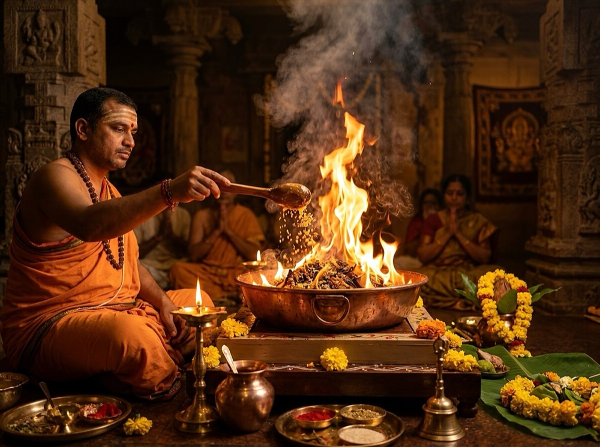

North Indian Wedding Rituals in Bangalore: A Complete Planning Guide
Comprehensive guide to North Indian wedding rituals in Bangalore — Jaimala, Kanyadaan, Havan, Pheras, Saptapadi, samagri checklist, and Hindi Pandit booking.
Read Full Guide →Stories, Guidance and Insights on Hindu Traditions

Comprehensive guide to North Indian wedding rituals in Bangalore — Jaimala, Kanyadaan, Havan, Pheras, Saptapadi, samagri checklist, and Hindi Pandit booking.
Read Full Guide →Learn how to choose an experienced Hindi-speaking Vedic priest in Bangalore for weddings, Griha Pravesh, Satyanarayan Puja, havan, and sanskars.
Read Full Guide →
Understand Pandit fees, ceremony type, duration, locality, Puja Samagri, and the key factors that influence booking costs in Bangalore.
Read Full Guide →
A complete guide to housewarming rituals, Vastu Shanti vidhi, milk boiling ceremony, apartment fire safety, and samagri checklist.
Read Full Guide →
Itemized lists of pure ritual ingredients for Griha Pravesh, Satyanarayan, Rudrabhishek, and Havan with local Bangalore sourcing tips.
Read Full Guide →
Everything you need to know about booking an authentic Vedic priest in Bangalore: details to share, samagri models, and prep tips.
Read Full Guide →
Connect with experienced Vedic priests who chant classical Sanskrit mantras with eloquent Hindi explanations and regional customs.
Read Full Guide →North Indian and Bihari family ceremony services, Satyanarayan Katha, Vivah rites, and family puja guidance in Bangalore.
Read Full Guide →Connecting Mithila families in Bangalore with Vedic Gurukul trained priests for Vivah, Griha Pravesh, Satyanarayan Katha, and traditional sanskaras.
Read Full Guide →
Convenient online booking, Panchang shubh muhurat guidance, and punctual in-person North Indian home ceremonies in Bangalore.
Read Full Guide →
Entering a new house with sacred Vedic mantras purifies cosmic energy and welcomes Lakshmi, Ganesha, and positive planetary influences.
Read More →
Understanding the divine grace of Lord Vishnu in the Reva Kanda of Skanda Purana and how the five chapters cultivate truth and humility.
Read More →
A step-by-step practical guide to preparing the agni kund, offering pure ghee and sacred samagri, and maintaining sanctity during havans.
Read More →
The deeper spiritual symbolism behind Kanyadaan, Panigrahana, and Saptapadi (Seven Vows) in authentic North Indian weddings.
Read More →
Fulfilling Pitru Rin through devotion, mantra chanting, kusha grass, and sesame offerings to bring peace to ancestors.
Read More →
Complete Hindu festival calendar with shubh tithis and auspicious timings for Shivratri, Holi, Navratri, Janmashtami, and Diwali.
Read More →
Comprehensive guide to observing Chhath Mahaparv in Bangalore — Nahay-Khay, Kharna, Sandhya & Usha Arghya, Ulsoor/Hebbal Ghat locations, and authentic Maithil-Bihari vidhi.
Read Full Guide →
Step-by-step guide to Diwali Lakshmi-Ganesh & Kuber Puja during Pradosh Kaal for Bangalore homes, apartments, tech offices, and commercial establishments.
Read Full Guide →Pandit Shyam Sundar Ji is an experienced Vedic scholar trained in North Indian Sanskrit traditions. He has personally conducted 2,000+ ceremonies for Hindu families across Bangalore including weddings, Griha Pravesh, havans, and Satyanarayan Katha. All guides on this blog are based on authentic Vedic scriptures and his personal expertise.